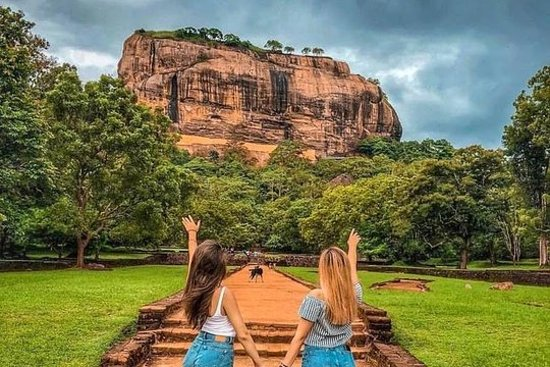
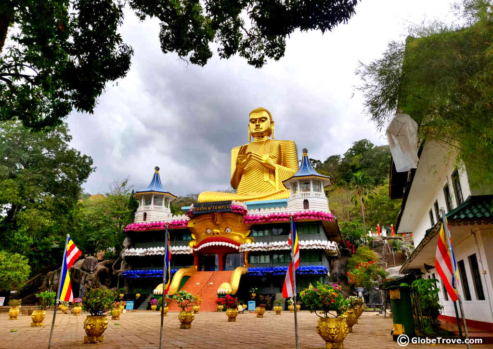

Sigiriya Rock
add_locationSigiriya
#1 Among things do in Dambulla
Weather :
N.A.
Time :
7AM-7PM
Entry Fee :
Foreigners LKR 5000.00/adult

Dambulla Cave Temple
add_locationDambulla
#2 Among things do in Dambulla
Weather :
N.A.
Time :
7 AM - 7 PM (ticket counter closes at 5 PM)
Entry Fee :
N.A.
Dress code :
Shoulders and knees must be covered and hats need to be take off.

Pidurangala Rock
add_locationSigiriya
#3 Among things do in Dambulla
Weather :
N.A.
Time :
7.45 A.M - 5.00 P.M
Entry Fee :
N.A.